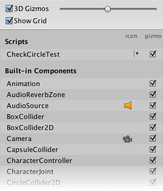

Gizmos menu
The Scene view and the Game view both have a Gizmos menu. Click the Gizmos button in the toolbar of the Scene view or the Game view to access the Gizmos menu.


| Property | Function |
|---|---|
| 3D Icons | The 3D Icons checkbox controls whether component icons (such as those for Lights and Cameras) are drawn by the Editor in 3D in the Scene view. When the 3D Icons checkbox is ticked, component icons are scaled by the Editor according to their distance from the Camera, and obscured by GameObjects in the Scene. Use the slider to control their apparent overall size. When the 3D Icons checkbox is not ticked, component icons are drawn at a fixed size, and are always drawn on top of any GameObjects in the Scene view. See Gizmos and Icons, below, for images and further information. |
| Show Grid | The Show Grid checkbox switches the standard Scene measurement grid on (checked) and off (unchecked) in the Scene view. To change the colour of the grid, go to Unity > Preferences > Colors and alter the Grid setting. This option is only available in the Scene view Gizmos menu; you cannot enable it in the Game view Gizmos menu. See Show Grid, below, for images and further information. |
| Selection Outline | Check Selection Outline to display selected GameObjects with a colored outline, and their children with a different colored outline. By default, Unity highlights the selected GameObject in orange, and child GameObjects in blue. NOTE: This option is only available in the Scene view Gizmos menu; you cannot enable it in the Game view Gizmos menu. See Selection Outline and Selection Wire, below, for images and further information. |
| Selection Wire | Check Selection Wire to show the selected GameObjects with their wireframe Mesh visible. To change the colour of the Selection Wire, go to Unity > Preferences > Colors and alter the Selected Wireframe setting. This option is only available in the Scene view Gizmos menu; you cannot enable it in the Game view Gizmos menu. See Selection Outline and Selection Wire, below, for images and further information. |
| Built-in Components | The Built-in Components list controls the visibility of the icons and Gizmos of all component types that have an icon or Gizmo. See Built-in Components, below, for further information. |
Gizmos and Icons
Gizmos
Gizmos are graphics associated with GameObjects in the Scene. Some Gizmos are only drawn when the GameObject is selected, while other Gizmos are drawn by the Editor regardless of which GameObjects are selected. They are usually wireframes, drawn with code rather than bitmap graphics, and can be interactive. The Camera Gizmo and Light direction Gizmo (shown below) are both examples of built-in Gizmos; you can also create your own Gizmos using script. See documentation on Understanding Frustum for more information about the Camera.
Some Gizmos are passive graphical overlays, shown for reference (such as the Light direction Gizmo, which shows the direction of the light). Other Gizmos are interactive, such as the AudioSource spherical range Gizmo, which you can click and drag to adjust the maximum range of the AudioSource.
The Move, Scale, Rotate and Transform tools are also interactive Gizmos. See documentation on Positioning GameObjects to learn more about these tools.

See the Script Reference page for the OnDrawGizmos function for further information about implementing custom Gizmos in your scripts.
Icons
You can display icons in the Game view or Scene view. They are flat, billboard-style overlays which you can use to clearly indicate a GameObject’s position while you work on your game. The Camera icon and Light icon are examples of built-in icons; you can also assign your own to GameObjects or individual scripts (see documentation on Assigning Icons to lean how to do this).


Show Grid
The Show Grid feature toggles a grid on the plane of your Scene. The following images show how this appears in the Scene view:

To change the colour of the grid, go to Unity > Preferences > Colors and alter the Grid setting. In this image, the Scene view grid is colored dark blue so that it shows up better against the light-colored floor:

Selection Outline and Selection Wire
Selection Outline
When Selection Outline is enabled, an outline appears around selected GameObjects and their child GameObjects. By default, Unity outlines selected GameObjects in orange, and child GameObjects in blue. You can change these colors in the Unity preferences (see Selection Colors, below).

When you select a GameObject, Unity outlines all of its child GameObjects (and their child GameObjects, and so on), but does not outline parent GameObjects (or their parent GameObjects, and so on).

If selected GameObjects extend beyond the edges of the Scene view, the selection outline runs along the edge of the window:

Selection Wire
When Selection Wire is enabled, then when you select a GameObject in the Scene view or Hierarchy window, the wireframe Mesh for that GameObject is made visible in the Scene view:

Selection colors
You can set custom colors for selection wireframes.
- Go to Unity > Preferences (macOS) or Edit > Preferences (Windows) to open the Preferences editor.
- On the colors tab, change one or more of the following colors:
- (A) Selected Children Outline: outline color for selected GameObjects’ children.
- (B) Selected Outline: outline color for selected GameObjects.
- (C) Wireframe Selected: outline color for selected GameObjects’ wireframes.

Built-in Components
Use the Built-in Components list to control the visibility of the icons and Gizmos of all component types that have an icon or Gizmo.
Some built-in component types (such as Rigidbody) are not listed here because they do not have an icon or Gizmo shown in the Scene view. Only components which have an icon or a Gizmo are listed.
The Editor also lists some of your project scripts here, above the built-in components. These are:
Scripts with an icon assigned to them (see documentation on Assigning icons).
Scripts which implement the OnDrawGizmos function.
Scripts which implement the OnDrawGizmosSelected function.
Recently changed items are at the top of the list.

The icon column shows or hides the icons for each listed type of component. Click the small icon under the icon column to toggle visibility of that icon. If the icon is in full colour in the menu then it is displayed in the Scene view; if it is greyed out in the menu, then it is not visible in the Scene view. Any scripts with custom icons show a small drop-down menu arrow. Click this to show the icon selector menu, where you can change the script's icon.
Note: If an item in the list has a Gizmo but no icon, there is no option in the icon column.
Tick the checkboxes in the Gizmo column to select whether Gizmo graphics are drawn by the Editor for a particular component type. For example, Colliders have a predefined wireframe Gizmo to show their shape, and Cameras have a Gizmo which shows the view frustum. Your own scripts can draw custom Gizmos appropriate to their purpose; implement OnDrawGizmos or OnDrawGizmosSelected to do this. Uncheck the checkboxes in this column to turn these Gizmos off.
Note: If an item in the list has an icon but no Gizmo, there is no checkbox in this column.